视线检测与图层
本节学习目标

本课要做出来的效果
上一课的敌人（动物守卫）会追会咬了，但它是个透视眼——隔着一堵墙也能发现你。这节课给它装上「眼睛」：中间有墙，就看不见你；你躲到墙后，它就放弃、回去巡逻。
WallLinecast 的起点、终点、命中结果与图层过滤CanSeePlayer() 接进 AnimalGuard，不再隔墙发现，遮挡后放弃Vector3.Angle 加视野角，从背后接近不会被发现加墙 · 从资源商店取建筑
场地一片空旷，敌人追你一览无余。要讲「视线」，得先有东西能挡视线——从资源商店取一栋免费的低多边形小屋（包里一栋房屋 + 一个木桶，共两个预制体），摆几栋就是现成的掩体。
① 添加至我的资源
- 浏览器打开资源链接：Lowpoly Baker's House - 低多边形面包师小屋（直接打开详情页，不用再搜）
- 详情页点「免费获取（添加至我的资源）」——这一步只是把资源记到账号下，还没下载到电脑
- 弹窗点「我已阅读并同意」，网页显示「添加至我的资源」
- 之后可在商店右上角「我的资源」里核对
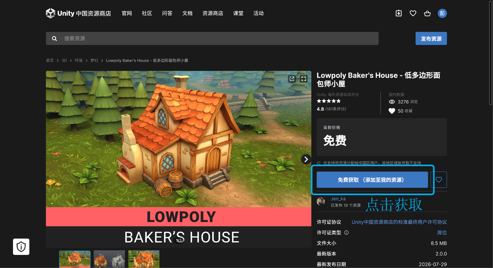

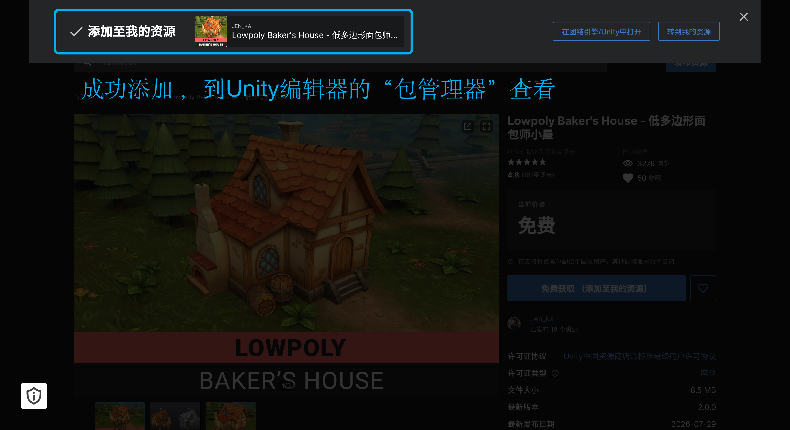
② 回 Unity 下载导入
- 菜单 窗口（Window）→ 包管理器（Package Manager），左上角把「包：内置」切换成「我的资产」——账号获取过的资源都在这里
- 找到「Lowpoly Baker's House」→ 点「下载」把资源包拉到本地 → 下载完点「导入」→ 弹出确认窗口再点一次「导入」
- 项目（Project）窗口的
Assets下会多出一个资源文件夹
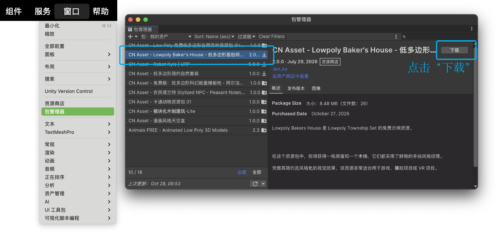
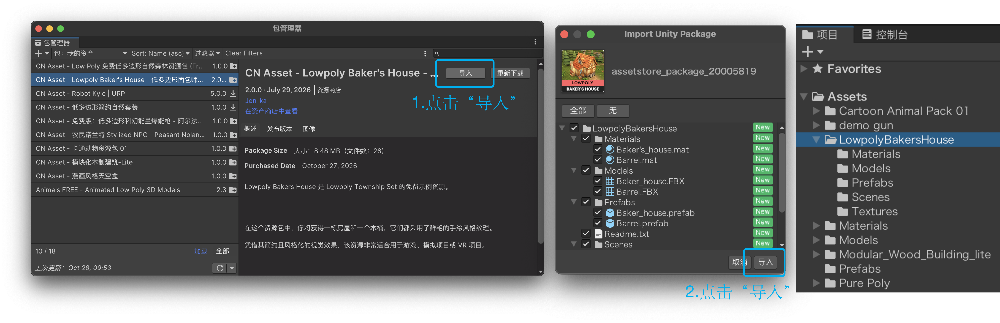
摆房子 · 从预制体到巷道
③ 添加模型到场景中
- 找到预制体：打开导入的资源文件夹，
Prefabs里只有两个——一栋房屋、一个木桶，没有单独的墙块，房子本身就是遮挡（木桶只是点缀，用不用都行）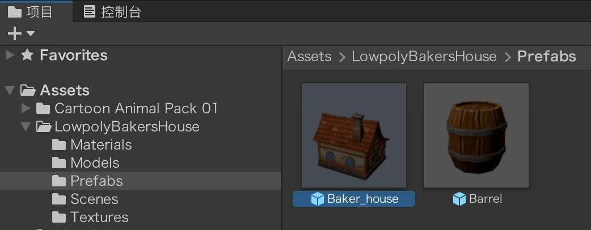
- 拖进场景：把房屋预制体拖进场景视图，层级（Hierarchy）窗口里会多出这个对象，用位置（Position）/ 旋转（Rotation）/ 缩放（Scale）摆到空地上

- 复制成巷道：选中它按 Ctrl + D 复制两三栋，前后错开留出过道——绕到屋后，敌人就看不见你
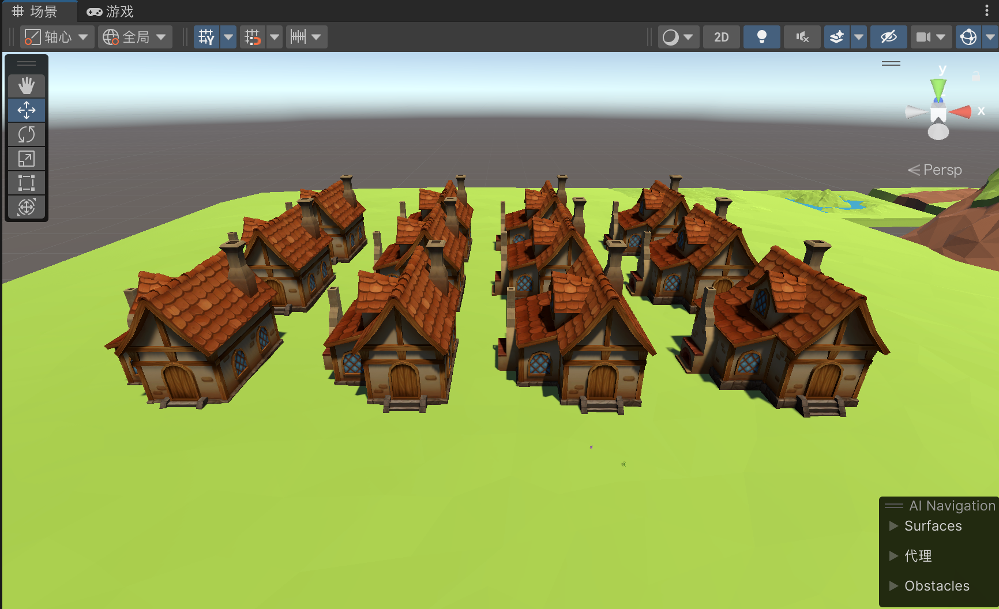
别悬空、别互相穿插；拖太多项目会卡。
重烘 · 房子摆好了，地图还是旧的
④ 重新烘焙导航网格（NavMesh）
房子不会自动变成「墙」：导航网格是课件16 烘焙出来的旧地图，房子脚下那块地在图上还标着「能走」——不重烘，敌人直接从屋里穿过去。所以加完房子还要走这三步：
- 勾上静态：选中房子（复制出来的几栋按住 Ctrl 一起选），在检查器（Inspector）顶部勾上「静态的（Static）」——烘焙只认静态物体，不勾等于白摆

- 点烘焙：菜单窗口（Window）→ AI → 导航（过时）（Navigation (Obsolete)），切到「烘焙（Bake）」页，点「烘焙（Bake）」——这一步会覆盖场景旁边那个
NavMesh.asset，旧地图就换成新的了（装 AI Navigation、代理半径那些，课件16 已经讲过一遍）
- 确认烘对了：Scene 视图里那片蓝色可走区域，在房子位置被挖空——房子成了地图上的一个「洞」，敌人只能绕着走
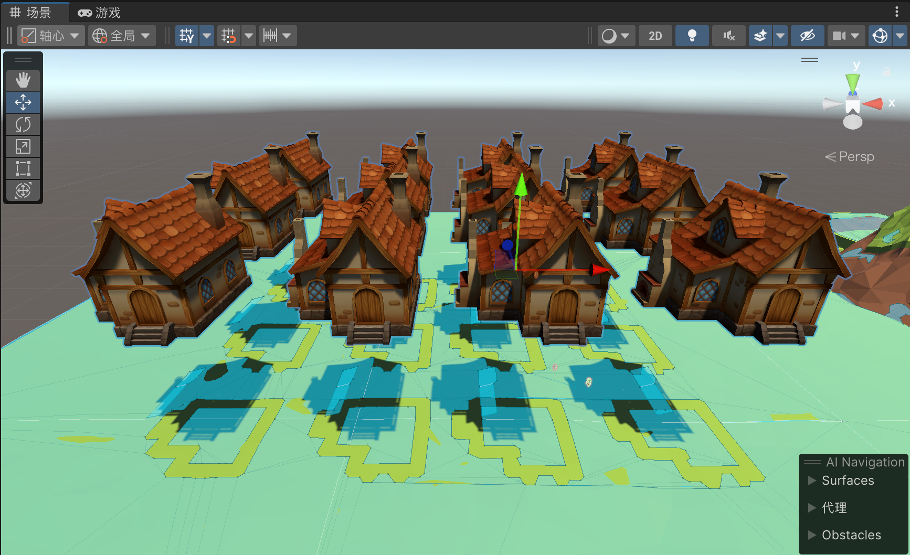
布点 · 让动物在巷道里巡逻

房子一摆，原来那套生成和巡逻全对不上号了：生成范围圈到了房子上，巡逻点落在了屋里。要改的其实只有位置——把这两样各挪一次；挪完还有一步最容易漏：把改动覆盖回预制体。
⑤ 生成中心与巡逻点，各挪一次
- 生成中心：课件15 建的那个空对象
SpawnCenter就是生成范围的圆心（它身上挂过图标，场景里能直接点中）。范围一旦压到房子，动物就可能生成在屋里、屋顶上——那儿没有可走的地面，导航代理找不到落脚点，一开局就卡死。把它拖到巷道空地上；还嫌大就回脚本把spawnRadius调小。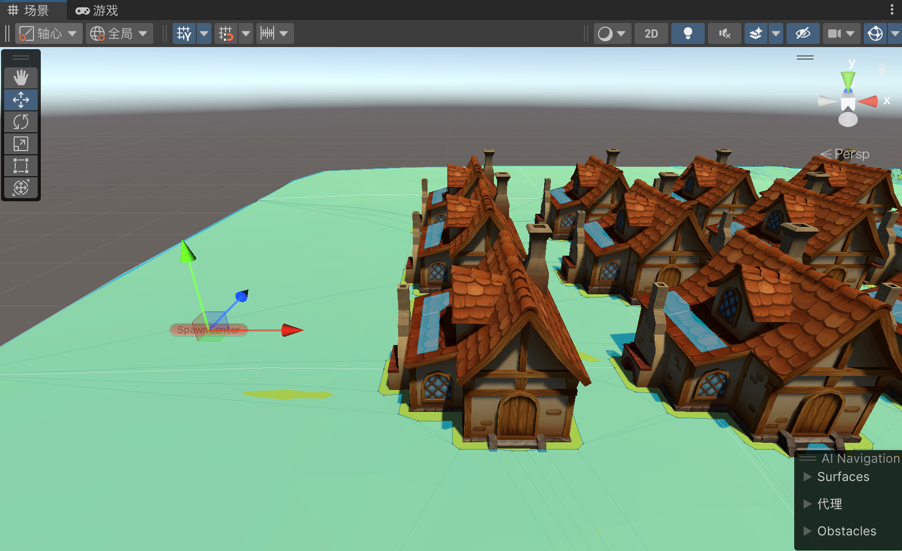
- 巡逻点：
Waypoints父对象下那几个空子物体，脚本按序号一个一个走过去。点落在房子里就不可达——代理会把它贴到最近的可走点，动物走到墙边就停住，看着像「不巡了」。把它们挨个拖进巷道，点与点之间别隔着房子。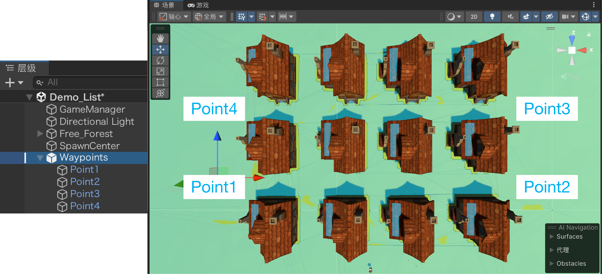
怎么算摆对：Scene 视图切俯视——生成范围那圈虚线圆只圈住空地和巷道；巡逻点 1→2→3 连起来的路线整段落在蓝色可走区域上，不穿房子。
预制体 · 覆盖与重建
⑥ 覆盖到预制体 · 应用全部
- 为什么必须覆盖：动物是从预制体刷出来的，你在场景里挪的巡逻点只是这一只身上的副本——预制体里那份还是旧的。重新运行、生成中心再刷出来的动物，走的还是老路线
- 怎么做：选中场景里改过的那只动物，在检查器（Inspector）顶部点「覆盖（Overrides）」→「应用全部（Apply All）」——改动写回预制体，六只动物（以及以后刷出来的）一起用上新巡逻点
- 怎么确认：层级（Hierarchy）窗口里对象名右边的覆盖标记消失，检查器顶部的「覆盖」也不再显示改动条数

⑦ 覆盖不管用？删掉预制体，重新存一个
「应用全部」偶尔推不上去：明明点过了，跑起来动物还是走老路线，或者巡逻点位置乱了。这多半是预制体里的巡逻点结构和场景里对不上——最干脆的办法是把预制体整个换掉。
- 先存场景，再删原预制体：按 Ctrl + S 保存场景，然后在 项目（Project）窗口里选中那只动物的预制体，按 Delete 删掉。删完场景里那几只还在原地，只是不再和预制体挂钩了

- 把场景里这只存成新预制体：在层级（Hierarchy）里选中已经调好巡逻点的那只动物，拖进项目（Project）窗口的资源文件夹——Unity 会把它存成一个新预制体，名字可以还叫原来的。拖完这一只就变回「预制体实例」了
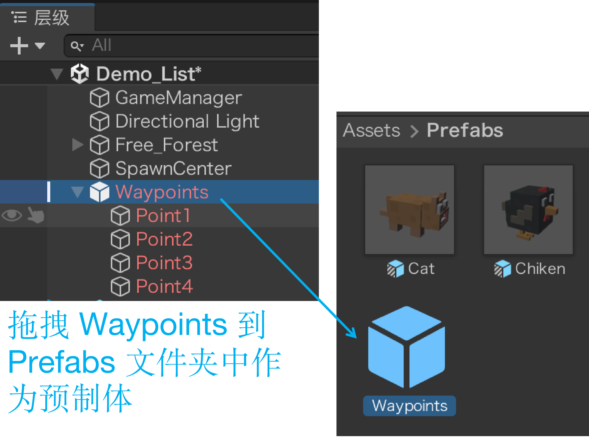
- 把新预制体挂回生成中心：旧预制体一删，生成中心脚本里的预制体槽位就变成 Missing（缺失）——把新预制体重新拖进那个槽位，否则重新运行时会报空引用、一只都刷不出来
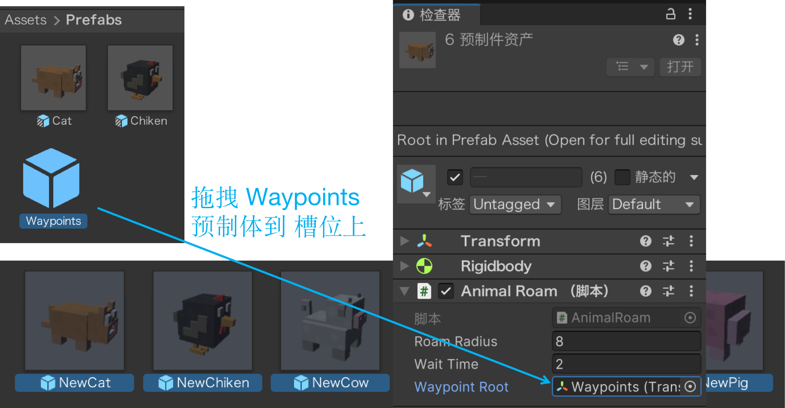
⑧ 播放，看效果
位置挪完了、预制体也覆盖好了，到这里就该按一次 ▶ 播放（或 Ctrl + P）验收：动物从巷道里的空地刷出来，沿着几个巡逻点在巷道中往返走，不穿墙、不进屋、不在墙边卡住。
透视眼 · 敌人只看距离
先调大发现距离
选中动物预制体，在检查器（Inspector）的 AnimalGuard 组件里修改两项：
- 发现距离（Sight Range）改为
15：玩家进入 15 米范围，动物就会发现 - 放弃距离（Lose Range）改为
20：玩家跑出 20 米，动物才放弃，给发现和放弃之间留出缓冲
追到多近停下（Chase Distance）保持 2：动物追到离你 2 米就刹住，不贴到脸上。

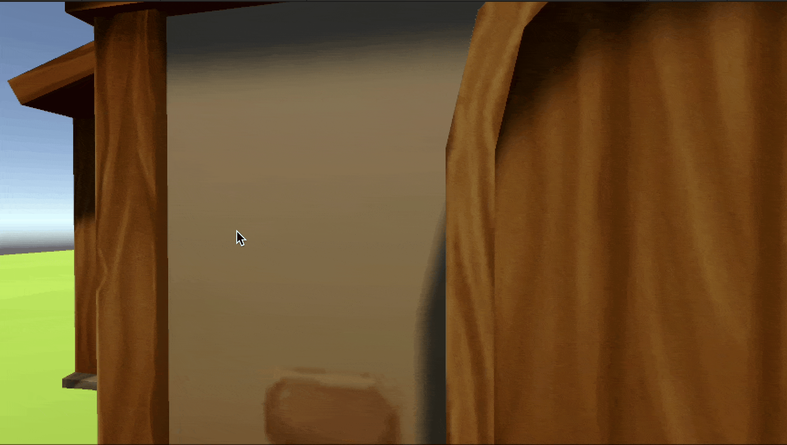
这样就是「透视眼」
让玩家和动物分别站在房屋两侧。只要两者的水平距离不超过 15 米，动物照样发现玩家，就好像能隔着房屋看见一样。
因为现在的 AnimalGuard 只判断距离，不检查中间有没有房屋。玩家躲到房屋后，只要还没跑出 20 米，动物也不会放弃。
图层（Layer）· 给碰撞体分类
图层是什么
图层（Layer）是引擎用来给对象分类的一套规则。普通游戏里，可以先按「这是谁、它要参与什么玩法」把场景对象分组：
它和标签（Tag）不是一回事：标签常用于代码里找对象，例如 FindGameObjectWithTag("Player")；图层常用于引擎规则，例如碰撞和射线过滤。一个对象可以同时拥有自己的标签和图层。
图层能管哪三件事
| 作用 | 谁来使用这份分类 | 本课例子 |
|---|---|---|
| 分类管理 | 场景与脚本按类别识别对象 | 房屋统一归为 Wall |
| 碰撞过滤 | 物理系统与图层碰撞矩阵 | 决定 Player 与 Wall 是否碰撞 |
| 射线过滤 | Linecast 等物理查询 | 只让 Wall 参与遮挡检测 |
只改图层的名字，不会让物体自动获得新行为；要把这层接进碰撞矩阵或 LayerMask，规则才真正生效。
创建 Wall 层，并分给房屋
- 打开图层列表：选中房屋，在检查器（Inspector）右上角点图层（Layer）→ 添加图层…（Add Layer…）
- 新建图层：在用户图层（User Layers）的空白行输入
Wall，然后回到场景中的房屋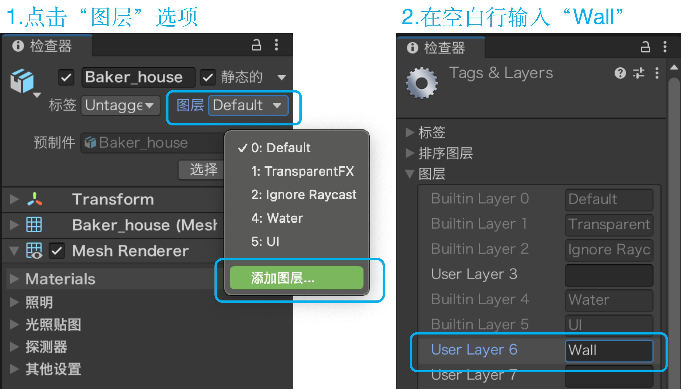
- 分给实际碰撞体：把房屋父对象的图层改为
Wall，在弹窗中选择「是，更改子对象（Yes, change children）」，让房屋模型子对象一起改为Wall。再展开层级核对实际碰撞体，并把修改应用回房屋预制体
一栋都不能漏：场景里所有房屋都要设成 Wall——同一份预制体的实例，改完并应用回预制体会一起变；来源不同的房子（另拖进来的、单独复制出来的）要各自设一遍。漏掉的那栋还是 Default，射线直接从它身上穿过去，看起来就像「这面墙不挡视线」。
Mesh Collider 的子对象；点了「否，仅此对象」，父对象显示 Wall、带碰撞体的子对象却还留在 Default，射线名单里没有它，视线就直接穿墙。改完点开那个子对象核对一眼：检查器右上角写着 Wall 才算改到位；点错了就再给父对象设一次层，重选「是」。图层碰撞矩阵 · 谁和谁能撞
分好类之后，物理引擎还要回答一句：这两层碰上了算不算数？答案在图层碰撞矩阵（Layer Collision Matrix）里。打开方式：编辑（Edit）→ 项目设置（Project Settings）→ 物理（Physics）。

物理面板底部那张表就是它：层名横排一遍、竖排一遍，交叉那一格决定这两层的关系——打勾＝会相撞（挡住、推开、站得住），取消＝互相当空气。行是层、列也是层，同一行里哪几列打勾，这个层就和哪几层相撞。
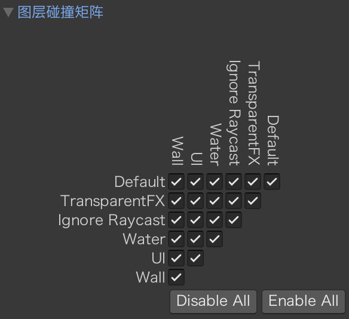
上图是默认状态：全部打勾，任何两层都正常碰撞，所以平时根本不用管它。它是项目级规则，改一次整个工程生效，不是某栋房子的私有开关——真要动它，多半是以后想让玩家能穿过某一类墙（比如做暗门），那时再去取消对应的那一格。
视线检测 · 接入 AnimalGuard
把「有没有遮挡」变成「能不能看见」
射线已经能检测墙，接下来用一个 CanSeePlayer() 方法封装判断：撞到 Wall 就返回 false，没撞到就返回 true。再把它接进两处 AI 逻辑：
- 第一次发现：进入 15 米，并且视线通畅，才进入警戒
- 追击途中：跑出 20 米，或者视线被墙挡住，就放弃并恢复巡逻
修改AnimalGuard.cs · 在上一课脚本上接着写
不新建脚本，直接打开已有的 AnimalGuard.cs。下面是可以整份覆盖的完整版本，标了 ①②③④ 的部分是本课相对于课件18 的新增内容；AnimalFollow 继续保持关闭。
课件18 作业里那三个和「咬」有关的字段（attackDistance、attackInterval、timer）这次整段删掉：咬得能掉血才算真咬，那一半放到课件20 交给 EnemyData 做。从这一课起，AnimalGuard 只管发现 → 跳一下 → 追过去 → 停在 2 米。
// AnimalGuard.cs —— 课件19版：接入距离与视线检测
// 完整脚本，可覆盖原文件；①②③④是本课新增
using UnityEngine;
using UnityEngine.AI;
public class AnimalGuard : MonoBehaviour
{
public float sightRange = 15f;
public float chaseDistance = 2f;
public float loseRange = 20f;
// ① 新增：在检查器里只勾 Wall
public LayerMask obstacleMask;
private NavMeshAgent agent;
private AnimalRoam roam;
private AnimalAnim anim;
private Transform player;
private bool alerted;
void Start()
{
agent = GetComponent<NavMeshAgent>();
roam = GetComponent<AnimalRoam>();
anim = GetComponent<AnimalAnim>();
// 按标签只找一次，Update 里反复使用
player = GameObject.FindGameObjectWithTag("Player").transform;
}
void Update()
{
Vector3 me = transform.position;
Vector3 you = player.position;
me.y = 0f;
you.y = 0f;
float d = Vector3.Distance(me, you);
if (!alerted)
{
// ② 新增：距离够了才检查视线
if (d <= sightRange && CanSeePlayer())
{
alerted = true;
roam.enabled = false;
anim.PlayJump();
}
return;
}
// ③ 新增：先判断距离，必要时才检查视线
if (d > loseRange || !CanSeePlayer())
{
alerted = false;
roam.enabled = true;
agent.isStopped = false;
roam.RestartRoam();
return;
}
if (d <= chaseDistance)
{
// 追到跟前：清路 + 刹住
agent.ResetPath();
agent.isStopped = true;
return;
}
agent.isStopped = false;
Vector3 dir = (me - you).normalized;
agent.SetDestination(you + dir * chaseDistance);
}
bool CanSeePlayer()
{
Vector3 origin = transform.position + Vector3.up;
Vector3 target = player.position + Vector3.up;
// ④ 新增：只让 obstacleMask 里的层参与检测
if (Physics.Linecast(origin, target, obstacleMask))
{
return false;
}
return true;
}
}代码讲解
- 整份脚本：保留课件18 的巡逻、发现、追击和放弃；新增
obstacleMask与CanSeePlayer()，不需要再建一个脚本文件。 - 公开槽位：
public LayerMask obstacleMask会在检查器里出现一个可多选的图层下拉框。这里勾哪几层，射线就检测哪几层。 - 三个参数：
Linecast(origin, target, obstacleMask)依次是起点、终点和图层名单。第三个参数不是距离，而是过滤条件。 - 结果取反：只检测墙以后，返回
true表示有墙，所以方法返回false；什么都没撞到才返回true。 - 不再取 hit：前面用
hit是为了看清撞到了什么；这里只问「有没有墙」，因此使用不返回RaycastHit的重载，代码更直接。 - 距离先行：两处都把
CanSeePlayer()放在条件最后。没进入发现距离，或者已经超出放弃距离，都不会做射线检测。 - 两处判断：第一次发现仍要求「够近 + 看得见」；追击途中仍然是「跑远或看不见就放弃」。15～20 米之间属于追击保持区，仍会继续检查视线。
- 空名单：如果
obstacleMask没勾任何层，Linecast永远返回false，敌人就会把所有方向都当成视线通畅。
把 Wall 填进 obstacleMask
- 在项目（Project）窗口选中动物预制体；有几个动物预制体，就逐个检查，不能只改场景里的某一只
- 在
AnimalGuard组件里找到Obstacle Mask - 勾选
Wall，不要选「所有（Everything）」；保存预制体，让生成中心刷出的动物也带上这份设置
无内容（Nothing） 是什么都检测不到，所有（Everything） 是检测所有层、容易被其他物体误挡，只勾 Wall 才是「墙能挡视线，其他层不参与」。作业 · 给敌人加视野角

基本要求
沿用已经完成的 AnimalGuard：Linecast 能挡视线，obstacleMask 已配置，AnimalFollow 保持关闭。现在的敌人虽然会看遮挡，却仍然是360° 全向发现——从背后贴近也会被发现。
给它加上 120° 视野角：只有正前方左右各 60° 内的玩家才可能被发现；从背后接近，不应触发警戒。
核心要求
- 用
Vector3.Angle计算敌人正前方与「敌人指向玩家」方向的夹角 - 120° 是整个视野角，判断时要用
fieldOfView * 0.5f - 第一次发现必须同时满足：距离够近 + 在视野角内 + 视线无遮挡
- 已经警戒后，玩家跑出视野角也要放弃，并完整恢复巡逻，不能只把
alerted改回false
本次作业（必做）：把角度接进警戒判断
只修改 AnimalGuard.cs，不用新建脚本。按下面四段补到对应位置；原有巡逻、发现、追击和放弃的代码保持不动。
// ① 字段区：新增完整视野角，默认 120°
public float fieldOfView = 120f;
// ② Update()：量完 d 后，计算正前方与目标方向的夹角
Vector3 direction = player.position - transform.position;
direction.y = 0f;
float angle = Vector3.Angle(transform.forward, direction);
bool inView = angle <= fieldOfView * 0.5f;
// ③ 没发现时：把原发现条件替换为下面三个条件
if (d <= sightRange && inView && CanSeePlayer())
{
// 原来的 alerted、roam、PlayJump 三行保持不动
}
// ④ 已发现时：把原放弃条件也补上「不在视野里」
if (d > loseRange || !inView || !CanSeePlayer())
{
// 原来的四行恢复巡逻代码保持不动
}代码讲解
- 视野字段：
fieldOfView是完整角度，所以 120° 在判断时要除以 2；直接写angle <= 120f，实际会得到左右各 120° 的超宽视野。 - 目标方向：
player.position - transform.position是「从敌人指向玩家」。写反后会测到相反方向，正前方就可能变成正后方。 - 压平方向：把
direction.y设为0，视野角只在水平面上判断，上下坡不会额外改变结果。 - 两个条件：
inView管「在不在前方」，CanSeePlayer()管「有没有被墙挡住」。它们不能互相替代；把射线调用放在最后，距离或角度不满足时就不会执行。 - 发现与放弃：③ 只管第一次发现；④ 管追击途中跑出视野。两处都接上，才是完整的视野角行为。
Vector3.Angle 返回 0°～180° 的无符号夹角，它只告诉你「偏了多少」，不区分左右。本作业不需要分左右，直接用 angle <= fieldOfView * 0.5f 即可。挑战（选做）
- 用
OnDrawGizmos()在场景视图画出sightRange的视野圆，以及左右两条视野边界，让 120° 范围不用播放也能看见 - 把不同动物设成 60°、120°、180°，比较它们的警戒范围；只改预制体上的参数，不为每种动物复制一份脚本